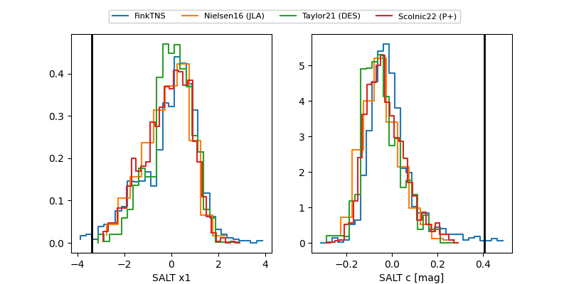

FINK: ZTF25abjmlyq
Lasair: ZTF25abjmlyq
ALeRCE: ZTF25abjmlyq
TNS: 2025vaj
YSE: 2025vaj
2025vaj (yse,tns)
ZTF25abjmlyq (ztf,fink)
equatorial (ra, dec) = (245.1994,+42.09820)
galactic (l, b) = (66.5093,+45.16680)

last ps1::i=20.71, ps1::r=20.83
3 ps1::i, 2 ps1::r detections